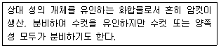

식물보호산업기사 (2005-03-20 기출문제)
1과목: 식물병리학
1. 토마토 배꼽썩음병이 발병하는 원인은?
- 질소 과다
- 인산 부족
- 칼륨 부족
- 칼슘 부족
(정답률: 78%)

2. 고온 다습한 여름 날씨에 많이 발생하는 병은?
- 사과 탄저병
- 배추 노균병
- 배나무 검은별무늬병
- 포도 새눈무늬병
(정답률: 79%)
3. 벼 도열병 방제에 쓰이는 약제는?
- 살충제
- 살균제
- 제초제
- 훈증제
(정답률: 73%)
4. 생물적 방제의 설명으로 적절하지 못한 것은?
- 생물적 방제는 환경보존과 지속적 농업에 잘 부합하는 방제법이다.
- Siderophore는 철분 흡수경쟁을 이용하는 생물적 방제법이다.
- Trichoderma sp.의 중기생성(重寄生性)이 생물적 방제에 이용된다.
- 생물적 방제는 저항성 품종만을 이용하는 것이다.
(정답률: 90%)
5. 세균의 침입 부위가 아닌 것은?
- 상처
- 기공
- 수공
- 각피
(정답률: 85%)
6. 맥류 줄기녹병균의 중간기주는 무엇인가?
- 매자나무
- 소나무
- 배나무
- 느티나무
(정답률: 73%)
7. 경란전염에 대한 설명으로 옳은 것은?
- 가벼운 알이 잘 전염된다.
- 전염이 어렵고 쉬운 정도를 말한다.
- 알 모양의 구근을 통해서 전염된다.
- 바이러스가 매개곤충의 알을 거쳐 다음 세대로 전해지는 현상이다.
(정답률: 86%)
8. 바이러스병 진단법과 관계가 먼 것은?
- 충체내 주사법
- 파지에 의한 진단법
- 지표식물에 의한 진단법
- 혈청학적 진단법
(정답률: 50%)
9. 벼 흰잎마름병균에 관한 설명 중 맞는 것은?
- 병원균은 Erwinia 속 세균이다.
- 수공을 통해서는 침입하지 못한다.
- 감자한천배지에서 배양되지 않는다.
- 겨풀이 월동기주이다.
(정답률: 50%)
10. 개별검정법으로 진단하는 병은?
- 포도나무 뿌리혹병
- 감자 바이러스병
- 소나무 혹병
- 오이 모자이크병
(정답률: 43%)
11. 바이오로그(Biolog) 셋트를 이용하여 진단하고 동정하는 병원체는?
- 세균
- 곰팡이
- 바이러스
- 바이로이드
(정답률: 31%)
12. 잣나무 털녹병을 일으키는 병원균은 어느 진균에 속하는 가?
- 난균류
- 불완전균류
- 자낭균류
- 담자균류
(정답률: 54%)
13. 벼 도열병균은 분류학상 어디에 속하는가?
- 세균
- 곰팡이
- 바이러스
- 선충
(정답률: 62%)
14. 선충의 식물기생성 여부를 판단할 수 있는 기준은?
- 꼬리의 각도
- 구침의 유무
- 입술의 모양
- 몸 표면의 주름
(정답률: 79%)
15. 검역은 다음 중 어디에 속하는가?
- 법적 방제법
- 경종적 방제법
- 생물적 방제법
- 물리화학적 방제법
(정답률: 86%)
16. 다음 중 식물병의 방제법으로 잘못 설명된 것은?
- 대추나무 빗자루병은 옥시테트라싸이클린 항생제로 수간주입하여 치료한다.
- 뽕나무 오갈병의 방제를 위해 매미충류 구제(驅除)가 필요하다.
- 과수 뿌리혹병을 방제하기 위해서는 묘목에 상처가 나지 않게 해야 한다.
- 양배추 검은빛썩음병은 무병주에서의 채종은 필요하지 않다.
(정답률: 93%)
17. 식물 바이러스의 전반에 대한 설명으로 가장 적합한 것은?
- 애멸구의 보독충은 경란 전염을 한다.
- 선충은 탈피하면 바이러스를 잃는다.
- 흡즙구보다는 저작구를 가진 곤충이 매개율이 높다.
- 곰팡이와 세균은 바이러스를 매개하지 않는다.
(정답률: 45%)
18. 아래 식물병원균 중 포자로서 번식하며 전염하는 것은 어느 것인가?
- 곰팡이
- 세균
- 바이러스
- 선충
(정답률: 89%)
19. 다음 병 중에서 병원균이 인공배양(人工培養)할 수 없는 것은?
- 사과 탄저병
- 벼 도열병
- 딸기 잿빛곰팡이병
- 보리 흰가루병
(정답률: 60%)
20. 배나무 붉은별무늬병균(赤星病菌)의 중간기주는?
- 향나무
- 송이풀
- 모과나무
- 매자나무
(정답률: 80%)
2과목: 농림해충학
21. 깍지벌레는 어느 목에 속하는가?
- 노린재목
- 총채벌레목
- 매미목
- 부채벌레목
(정답률: 52%)
22. 성충으로 월동하는 해충은?
- 오이잎벌레
- 복숭아순나방
- 이화명나방
- 짚시나방
(정답률: 54%)
23. 곤충의 체벽을 이루고 있는 층 중에서 실제로 살아 있는 층은?
- 외표피층
- 원표피층
- 진피층
- 기저막
(정답률: 69%)
24. 곤충의 뇌(腦)는 앞대뇌, 뒷대뇌, 제3대뇌의 3개의 신경절로 되어 있다. 제3대뇌의 역할은 무엇인가?
- 시감각에 관여
- 촉감각에 관여
- 청감각에 관여
- 소화기 운동에 관여
(정답률: 62%)
25. 탈피과정에서 다시 흡수되어 재활용되는 체벽의 부분은?
- 내원표피
- 외원표피
- 상표피
- 기저막
(정답률: 78%)
26. 영양물질의 저장 및 배설작용을 돕는 백색의 조직으로 노숙유충의 체강안에서 많이 볼 수 있는 것은?
- 편도세포
- 지방체
- 알라타체
- 존스톤씨기관
(정답률: 54%)
27. 곤충목의 분류에서 개미가 속하는 목은?
- 벌목
- 노린재목
- 흰개미목
- 흰개미붙이목
(정답률: 61%)
28. 곤충의 입이 씹는 형(Chewing type)의 구조로 되어 있는 것은?
- 매미의 성충
- 가루깍지벌레
- 복숭아혹진딧물
- 딱정벌레유충
(정답률: 60%)
29. 다음 설명은 곤충의 어떤 페로몬에 대한 설명인가?

- 집합페로몬
- 경보페로몬
- 성페로몬
- 길잡이페로몬
(정답률: 82%)
30. 포도나무 줄기를 가해하는 해충끼리 짝지어진 것은?
- 포도호랑하늘소 - 포도쌍점매미충
- 포도금빛잎벌레 - 포도뿌리혹벌레
- 으름나방 - 무궁화밤나방
- 포도유리나방 - 박쥐나방
(정답률: 69%)
31. 곤충의 생식 방법이 아닌 것은?
- 양성생식
- 웅성불임생식
- 다배생식
- 단위생식
(정답률: 74%)
32. 유ㆍ약충호르몬은 어떤 것인가?
- 카이로몬(kairomone)
- 알로몬(allomone)
- 알라타(allata)체 호르몬
- 앞가슴호르몬
(정답률: 72%)
33. 모기가 벽에 앉을 때 언제나 머리를 위로 하고 앉는다. 이러한 성질은 다음 중 어디에 속하는가?
- 주광성(走光性)
- 주화성(走化性)
- 주촉성(走觸性)
- 주지성(走地性)
(정답률: 78%)
34. 다음 수목해충 중 번데기 시기가 없는 불완전변태를 하는 종은 어느 것인가?
- 진달래방패벌레
- 솔잎혹파리
- 솔나방
- 솔수염하늘소
(정답률: 73%)
35. 다음 해충 중에서 충영을 만드는 해충은?
- 밤바구미
- 소나무좀
- 솔잎혹파리
- 복숭아명나방
(정답률: 66%)
36. 곤충 종간통신(種間通信)에 사용되는 화학적 신호물질로 자신이 풍기는 체취물 때문에 불리하게 작용하는 이 물질은 어느 것인가?
- 카이로몬(kairomone)
- 알로몬(allomone)
- 봄비콜(bombykol)
- 알라타(allata)체 호르몬
(정답률: 50%)
37. 부진자류에 속하는 해충으로 본답후기 해충방제에 가장 역점을 두어야 할 대상 해충은 어느 것인가?
- 애멸구
- 벼멸구
- 끝동매미충
- 번개매미충
(정답률: 75%)
38. 내충성 품종을 이용하여 방제하고 있는 해충은?
- 매미나방
- 알락하늘소
- 복숭아혹진딧물
- 밤나무혹벌
(정답률: 61%)
39. 중배엽(Mesoderm)이 생성하는 기관은?
- 중장
- 전장
- 심장
- 신경
(정답률: 52%)
40. 번데기에 대한 설명 중 잘못된 것은?
- 번데기는 불완전 변태하는 곤충에서만 볼 수 있다.
- 번데기 기간에는 새로운 성충조직들이 형성된다.
- 번데기 시기에는 천적에 의한 사망율이 높아진다.
- 번데기는 낙엽속 또는 땅속에 형성되는 경우가 많다.
(정답률: 75%)
3과목: 농약학
41. 사람이나 동물의 체내에 들어가면 분해되어 배설되지 않고 체내의 지방조직에 축적되는 성질이 있는 약제는?
- 유기인제
- 유기염소제
- 카바메이트제
- 디치오카바메이트제
(정답률: 68%)
42. 농약을 음식물로 잘못 알고 마셨을 때 나타나는 중독은?
- 급성중독
- 아급성 독성
- 만성중독
- 식중독
(정답률: 80%)
43. 식물 고유의 분해·불활성화 기작에 기인된 것으로 식물 체내외에서 제초제의 흡수와 이동의 차에 의해서 일어나는 선택성은?
- 물리적 선택성
- 생화학적 선택성
- 생리적 선택성
- 생태적 선택성
(정답률: 64%)
44. Sulfonyl Urea계 제초제의 일반적 특성이 아닌 것은?
- 매우 낮은 약량으로 광범위한 잡초에 대해 높은 제초 활성을 나타낸다.
- 벼에 대한 안전성이 높다.
- Bensulfuron-methyl은 피 및 다년생 잡초를 동시에 방제 가능하다.
- Pyrazosulfuron Ethyl(NC-311)은 가격이 매우 비싸다
(정답률: 45%)
45. 수화제의 물리적 성질 및 입자의 크기를 바르게 나열한 것은?
- 수화성, 325mesh
- 수화성, 250mesh
- 유화성, 325mesh
- 유화성, 250mesh
(정답률: 57%)
46. 응애약인 플루페녹수론 분산성액제의 검사항목이 옳게 짝지어진 것은?
- 유효성분, 유화성
- 유효성분, 수중분산성
- 유효성분, 분말도
- 유효성분, 수용성
(정답률: 54%)
47. 비누류 전착제에 대한 설명으로 옳지 않은 것은?
- 콩기름이나 물고기기름 등의 칼륨염이 사용된다.
- 송진전착제는 송진비누를 주성분으로 노란 갈색을 띄는 묽은 액체이다.
- 살충제에 혼합하면 유효성분의 살충력을 증가시켜 준다.
- 우유, 콩카세인, 석회 등의 카세인 전착제는 제충국제에 혼합하여 쓴다.
(정답률: 57%)
48. 곤충의 체내에는 유독한 약제를 분해시켜 무독한 것으로 해독하는 작용이 있는데, 이와 관련하여 옳지 않게 짝지어진 것은?
- DDT - DDE
- Pyrethrin - Esterase
- Carbamate - Carbamatase
- Parathion - Paraoxon
(정답률: 22%)
49. 다음 농약 중 실험 동물(rat)에 경구독성이 가장 강한 것은?(오류 신고가 접수된 문제입니다. 반드시 정답과 해설을 확인하시기 바랍니다.)
- 이피엔(EPN)
- 다이지논(Diazinon)
- 디디브이피(Dichlorvos)
- 메프(Fenitrothion)
(정답률: 53%)
50. 급성독성의 강도가 가장 큰 흡입 경로는?
- 흡입독성
- 경구독성
- 경피독성
- 보통독성
(정답률: 61%)
51. 물에 녹지 않은 약제를 잘 녹이는 용매(Solvent)에 녹여 유화제를 가하여 만든 제제는?
- 용액
- 유제
- 액제
- 수화제
(정답률: 75%)
52. 12% 메소밀 분말 1kg을 1% 메소밀 분말로 만들려면 소요되는 증량제의 양은?
- 15kg
- 13kg
- 11kg
- 9kg
(정답률: 68%)
53. 살균제 중 비소(As)를 함유하고 있는 것은?
- 베나솔제(Probenazol)
- 에디펜제(Hinosan)
- 네오아소진제(Neo-asozine)
- 만코지제(Dithane M-45)
(정답률: 55%)
54. 유기인제의 살충 작용은?
- 직접접촉
- 침투성
- 기피
- 유인
(정답률: 37%)
55. 어떤 살충제에 대하여 한번도 사용한 실적은 없지만 작용 기구가 같은 살충제에 저항성을 나타내는 현상은?
- 교차저항성
- 복합저항성
- 살충제저항성
- 저항성계수
(정답률: 65%)
56. 농약 제품 중 메치온(Methidathion) 40% 유제를 1000배액으로 희석해서 10a 당 6말(20ℓ/말)을 살포하여 해충을 방제하고자 할 때 메치온 40% 유제의 소요량은?
- 240cc
- 150cc
- 120cc
- 100cc
(정답률: 66%)
57. 항생물질계 살균제는?
- B-나인
- 포리옥신
- 파 밤
- 지네브
(정답률: 42%)
58. 수화제 농약이 살포액 중에 균일하게 잘 분산하는 성질을 의미하는 것은?
- 유화성
- 현수성
- 가용성
- 비산성
(정답률: 53%)
59. 다음 중 약효가 가장 확실한 제형은?
- 입제
- 분제
- 수화제
- 유제
(정답률: 59%)
60. 유기인계 살충제의 특성이 아닌 것은?
- 일반적으로 살충력이 강하고 적용 해충의 범위가 넓다.
- 동, 식물체 내에서 분해가 빠르다.
- 알칼리에 대하여 분해되기 쉽다.
- 일반적으로 유기염소제 보다 어독성이 강한 약제가 많다.
(정답률: 48%)
4과목: 잡초방제학
61. 잡초종자의 산포 특징을 설명한 것 중 바르게 연결한 것은?
- 낙하산 → 민들레, 망초
- 낚시모양의 돌기 → 도꼬마리, 민들레
- 비늘모양의 가시 → 도깨비바늘, 명아주
- 포크모양 → 바랭이, 어저귀
(정답률: 57%)
62. 제초제를 분류하는 방법 중 서로 관계가 깊은 것끼리 연결된 것은?
- 토양 처리제 - 생육기 처리제
- 경엽 처리제 - 발아후 처리제
- 경엽 처리제 - 초기 처리제
- 발아전 처리제 - 후기 처리제
(정답률: 52%)
63. 선택성 제초제가 아닌 것은?
- 2,4-D 액제
- 푸로닐(Propanil)유제
- 부타(Butachlor)유제
- 글리신(Glyphosate)액제
(정답률: 62%)
64. 논 다년생잡초의 증가요인이 아닌 것은?
- 이모작의 감소
- 다년생 제초제의 연용
- 춘경 및 추경의 감소
- 손제초의 감소
(정답률: 53%)
65. 예방적 방제수단에 해당하지 않는 방법은?
- 작물종자의 정선
- 중경제초
- 비산종자의 관리
- 농기계의 청소
(정답률: 68%)
66. 논 제초제의 약해발생 원인과 가장 관계가 적은 것은?
- 모래땅
- 묘의 소질
- 누수
- 유기물 시용
(정답률: 58%)
67. 여름잡초만으로 나열된 것은?
- 여뀌, 피, 냉이
- 방동사니, 벼룩나물, 바랭이
- 깨풀, 별꽃, 진득찰
- 피, 쇠비름, 미국개기장
(정답률: 54%)
68. 제초제의 제형 중 입제의 특성이 아닌 것은?
- 사용이 편리하다.
- 유효성분의 농도가 낮다.
- 습한 토양보다 건조한 토양에서 효과가 크다.
- 비산에 의한 인접작물의 약해의 우려가 적다.
(정답률: 54%)
69. 토양내 지하경을 형성하지 않는 잡초는?
- 가래
- 벗풀
- 알방동사니
- 올미
(정답률: 41%)
70. 우리나라 과수원에서 발생하는 주요 잡초종이 아닌 것은?
- 바랭이
- 강아지풀
- 닭의장풀
- 매자기
(정답률: 63%)
71. 종자번식을 하는 잡초는?
- 올방개, 보풀
- 메꽃, 벗풀
- 나도겨풀, 올방개
- 바랭이, 명아주
(정답률: 56%)
72. 잡초와의 경합에 의해 벼 수량 감소가 가장 큰 재배법은?
- 중묘 재배
- 손이앙 재배
- 어린모 재배
- 직파 재배
(정답률: 68%)
73. 잡초의 예방적 방제법을 옳게 설명한 것은?
- 생물을 사용하여 방제하는 것을 의미함
- 잡초의 발생을 예방하는 위생적 방제법을 의미함
- 제초제를 사용한 방제법을 의미함
- 기계를 사용한 방제법을 의미함
(정답률: 72%)
74. 잡초의 유용성에 대한 설명으로 가장 옳은 것은?
- 토양의 풍식을 막아주거나 수식을 조장시킨다.
- 유전자 은행의 기능이 있다.
- 병원균이나 해충의 생육을 저해한다.
- 토양의 유기물을 탈취한다
(정답률: 51%)
75. 제초제의 제형의 표기가 잘못된 것은?
- 입제 - G(GR)
- 유제 - Ec(EC)
- 분제 - Wp(WP)
- 미립제 - Mg(MG)
(정답률: 53%)
76. 다음 잡초의 학명 중 피의 학명을 바르게 나타낸 것은?
- Scirpus juncoides
- Eleocharis kuroguwai
- Sagittaria pygmaea
- Echinochloa crusgalli(L.)
(정답률: 53%)
77. 잡초의 식물학적 분류로 세분되는 순서는?
- 계-속-강-목-문-과-종
- 계-문-목-강-과-종-속
- 계-문-강-목-과-속-종
- 문-강-목-계-속-과-종
(정답률: 64%)
78. 다음 토양 중 제초제의 용탈이 가장 심한 토양은?
- 사토
- 사양토
- 양토
- 식토
(정답률: 77%)
79. 마세트(6%)입제를 10a당 상품량으로 3kg을 살포하고자 한다. 표면적 200m2의 포트에 처리하는데 필요로 하는 상품량은 얼마인가?
- 400g
- 600g
- 800g
- 1000g
(정답률: 75%)
80. 잡초가 동일한 밀도로 발생하였을 때 벼와 경합력이 가장 큰 잡초는?
- 피
- 물달개비
- 마디꽃
- 알방동사니
(정답률: 73%)